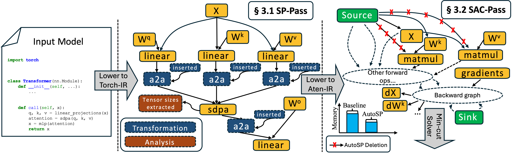
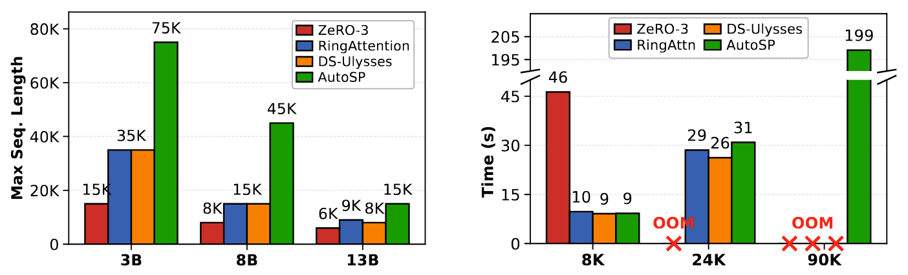

News
2026-01-26: AutoSP has been accepted at ICLR 2026
Large-language-models (LLMs) demonstrate enormous utility in long-context tasks which require processing prompts that consist of tens to hundreds of thousands of tokens. However, existing LLM training libraries do not provide easy to use abstractions to optimize for long-context training, instead focusing on optimizations for models with large parameter counts through ZeRO-3/FSDP, Tensor and Pipeline parallelism. This forces users to rewrite LLM training libraries to incorporate compositions of various complex long-context optimizations, such as sequence-parallelism, to training pipelines; a process that requires in-depth expertise, reducing developer productivity. To tackle these challenges, we introduce AutoSP: the first automated solution to automatically optimize LLM training for longer-contexts. AutoSP compiles models and applies a targeted set of optimizations: automated sequence parallelism, and long-context aware activation-checkpointing, to drastically enhance LLM trainability at negligible cost to throughput. Our evaluation demonstrates AutoSP's capability on both NVIDIA and AMD hardware, increasing training contexts by upto 2.7x and 2.5x respectively over competitive hand-written baseline at negligible cost to runtime performance.
Sequence Parallelism has emerged as an approach to scale input-context lengths during training. However, implementing Sequence Parallelism requires invasive code-changes to existing training pipelines such as communication collective insertion and sharding of input tokens and intermediate activations. Consequently, researchers have to re-engineer existing systems stack in order to enable long-context capability, experimenting with optimizations like communication and computation overlapping to increase runtime performance.
To avoid this cumbersome process, we introduce the first compiler-based implementation of Sequence Parallelism, AutoSP. In embedding long-context training strategies into the compiler, users can simply compile easy-to-use single-GPU code into multi-GPU sequence-parallel code.

AutoSP introduces compiler passes that automatically shard input token lengths and intermediate activation buffers, insert communication collectives, and reasons about correctness for both the forwards and backwards passes. AutoSP specifically implements DeepSpeed-Ulysses style sequence-parallelism, as Ulysses' communication overhead stays constant with increasing GPU counts on NVLink topologies or fat-tree networks.
AutoSP additionally introduces a sequence aware activation checkpointing compiler pass (SAC) that exploits unique long-context FLOP dynamics to further enable longer context training. Although Pytorch-2 introduces an automated AC max-flow min-cut formulation, we find it to be overly convservative for long-context training. SAC seeks to remedy this to make long-context training more feasible.
AutoSP is simple to use. It has been integrated into DeepSpeed and enables users to convert arbitrary single-GPU training code to multi-GPU sequence parallel code by simply changing their DeepSpeed config and calling compile. AutoSP compiler passes will then take care of implementing sequence parallelism.
# We instantiate a deepspeed config.
# Assume 8 GPUs with 2 dp ranks and 4 sp ranks.
config = {
"train_micro_batch_size_per_gpu": 1,
"train_batch_size": 2,
"steps_per_print": 1,
"optimizer": {
"type": "Adam",
"params": {
"lr": 1e-4
}
},
"zero_optimization": {
"stage": 1, # AutoSP interoperates with ZeRO 0/1.
},
# Simply turn on deepcompile and set
# the AutoSP pass to be triggered on.
"compile": {
"deepcompile": True,
"passes": ["autosp"]
},
"sequence_parallel_size": 4,
"gradient_clipping": 1.0,
}
# Initialize deepspeed with model.
model, _, _ = deepspeed.initialize(config=config, model=model)
# Compiles model and automatically applies AutoSP passes.
model.compile(compile_kwargs={"dynamic": True})
for idx, batch in enumerate(train_loader):
# Custom function that we expose within:
# deepspeed/compile/passes/sp_compile.
inputs, labels, positions, mask = prepare_auto_sp_inputs(batch)
loss = model(
input_ids=inputs,
labels=labels,
position_ids=positions,
attention_mask=mask
)
... # Backwards pass, optimizer step etc...
We evaluate AutoSP's performance on models of varying sizes on NVIDIA GPUs to show that its ease of use comes at little to no cost to runtime performance. We benchmark different Llama 3.1 models on an 8 A100-80Gb SXM node. We use PyTorch 2.7 with CUDA 12.8, comparing AutoSP to torch-compiled hand-written baselines of: RingFlashAttention, DeepSpeed-Ulysses, and ZeRO-3.
🔧 Integration: AutoSP is built on top of DeepCompile and has been merged into DeepSpeed main.
@inproceedings{
gupta2026autosp,
title={Auto{SP}: Unlocking Long-Context {LLM} Training Via Compiler-Based Sequence Parallelism},
author={Ahan Gupta and Zhihao Wang and Neel Dani and Masahiro Tanaka and Olatunji Ruwase and Minjia Zhang},
booktitle={The Fourteenth International Conference on Learning Representations},
year={2026},
url={https://openreview.net/forum?id=0fgsHvmBBI}
}